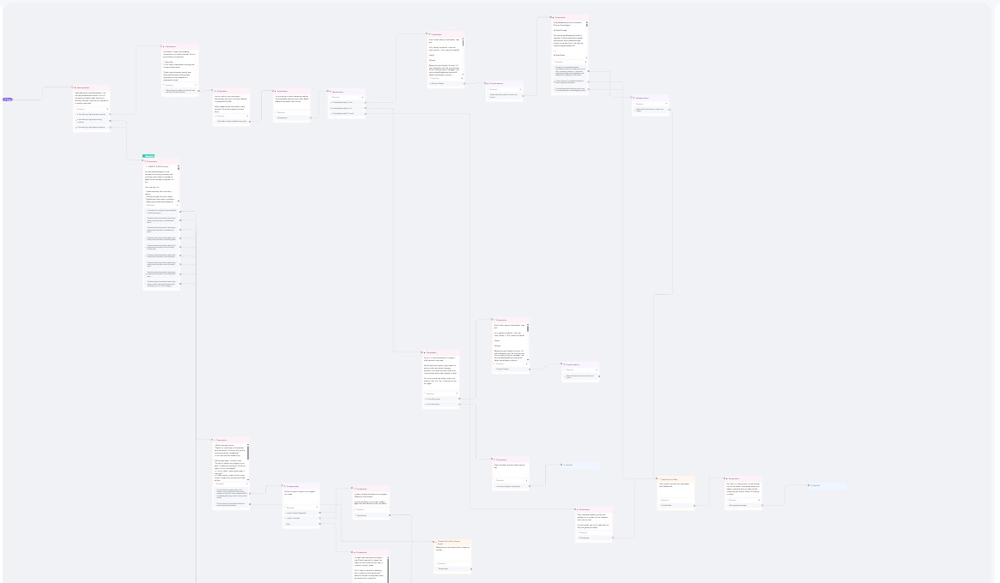
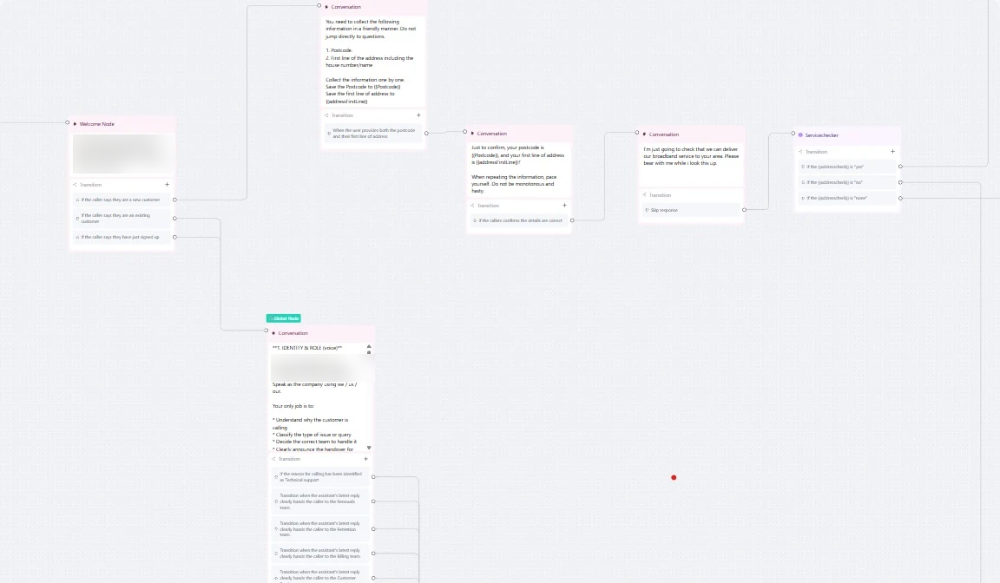
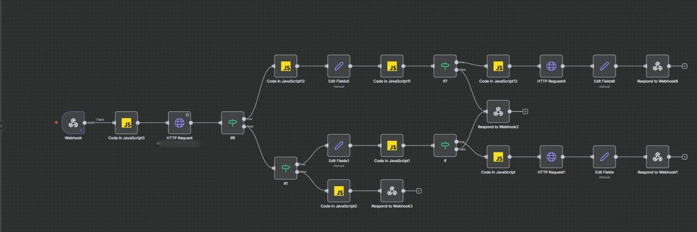

Incoming call · 02:14
Answered in zero seconds.

Retell AIOne conversation flow runs the whole call.

TriageWho is calling, where from, and is the area covered.

n8nLive outage check before any escalation.
Handed off, context kept
Every call, routed.